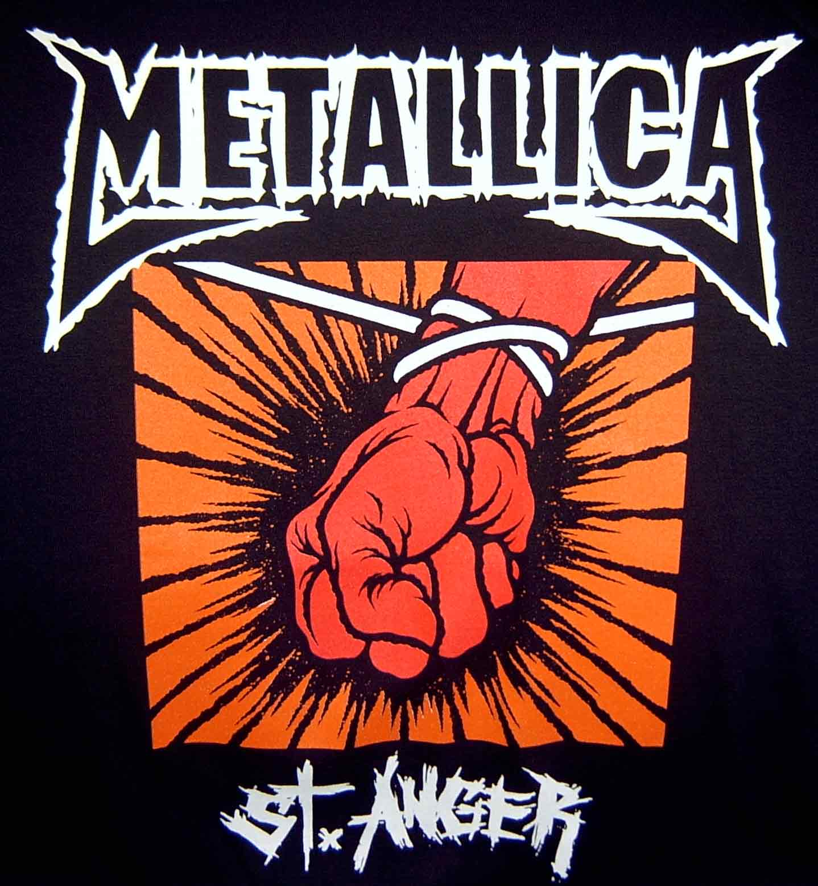
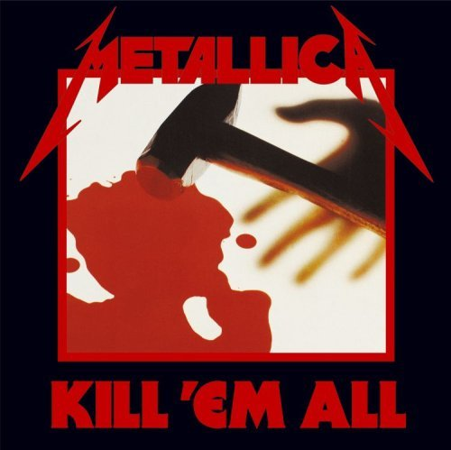
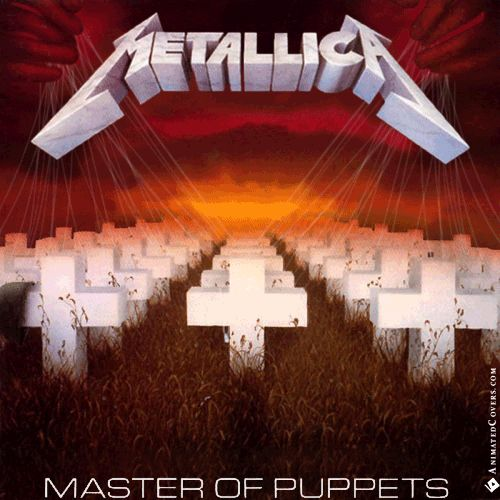
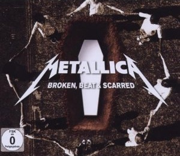

St. Anger é o oitavo álbum de estúdio da banda estadunidense de metal Metallica, lançado em 5 de junho de 2003 pela Elektra Records. O álbum é considerado o mais "controverso" de toda a carreira da banda.
Kill 'Em All é o álbum de estreia da banda de heavy metal Metallica, lançado em 1983. O nome inicial do álbum seria Metal Up Your Ass, porém a gravadora achou o nome muito agressivo e mudou-o para Kill 'Em All.
Master of Puppets é o terceiro álbum de estúdio pela banda de thrash metal/heavy metal norte-americana Metallica, lançado em 3 de março de 1986 pela Elektra Records.
Death Magnetic é o nono álbum de estúdio da banda de heavy metal Metallica, lançado em 12 de setembro de 2008 pela Warner Bros Records.
